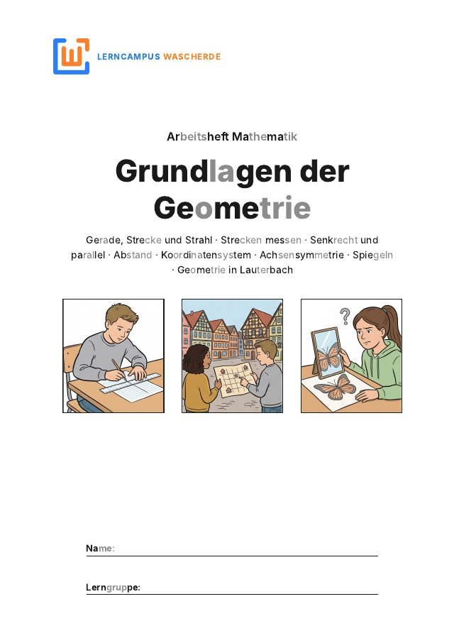

Arbeitsheft Mathematik · Jahrgang 5
Grundlagen der Geometrie
In diesem Heft lernst du Gerade, Strecke und Strahl zu unterscheiden und Strecken zu messen. Du zeichnest senkrechte und parallele Geraden, arbeitest mit dem Koordinatensystem und spiegelst Figuren.
Heft öffnenPDF · 34 Seiten · 1,2 MB